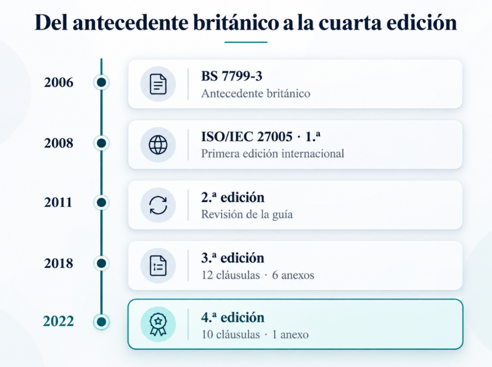
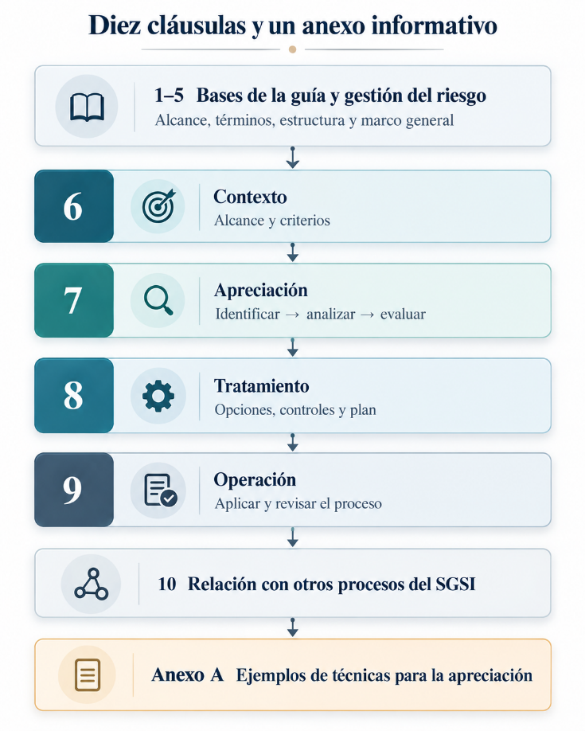
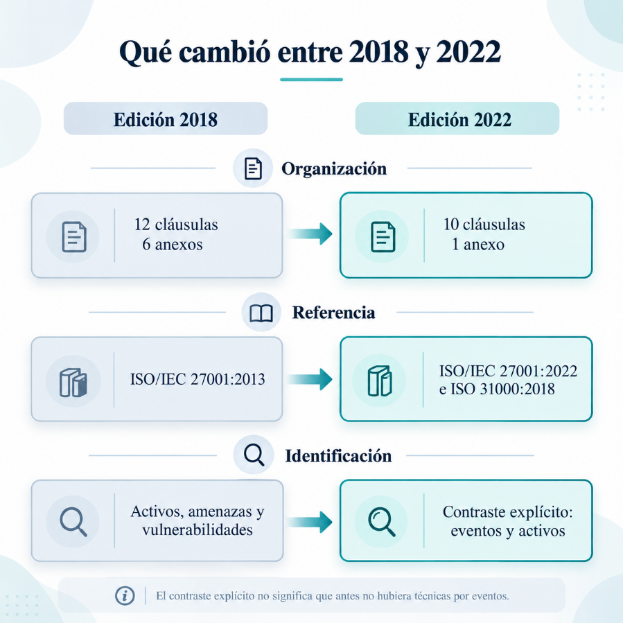
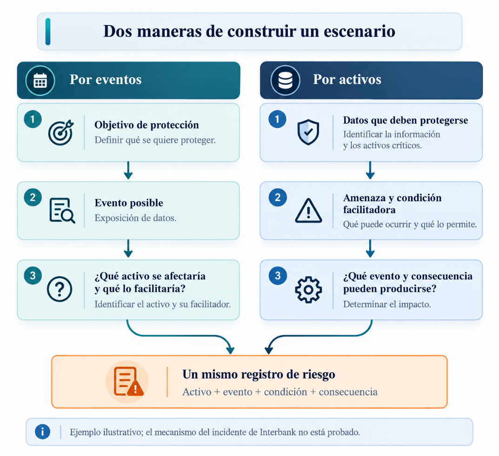
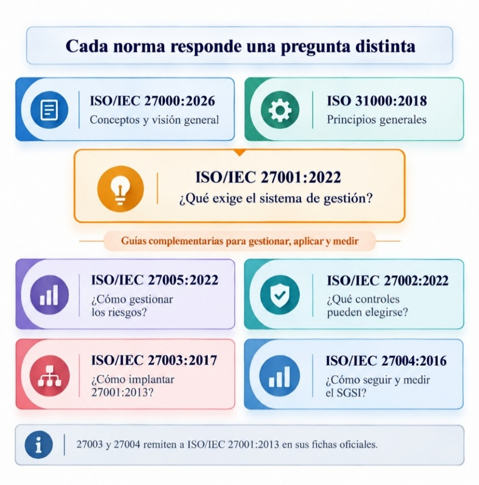
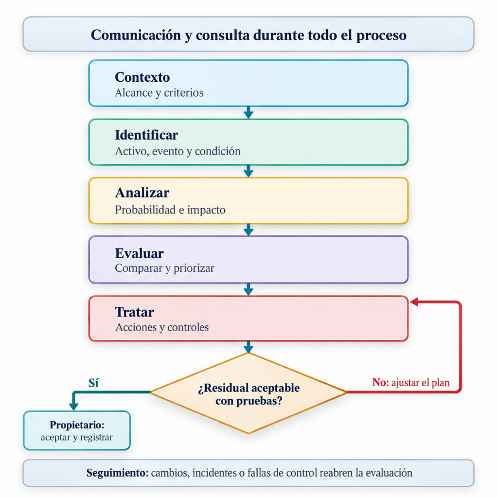
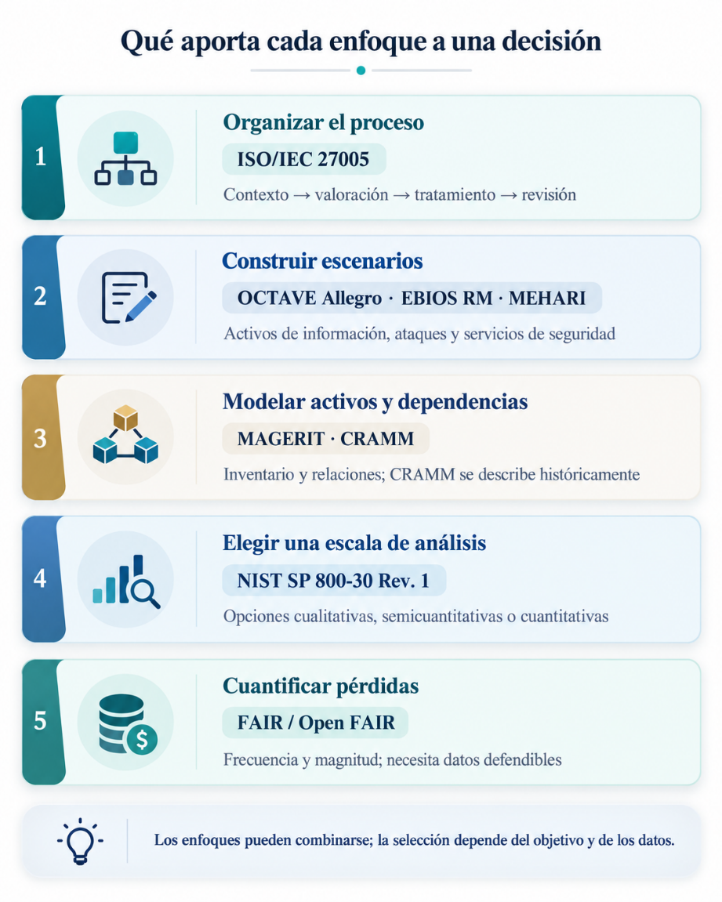
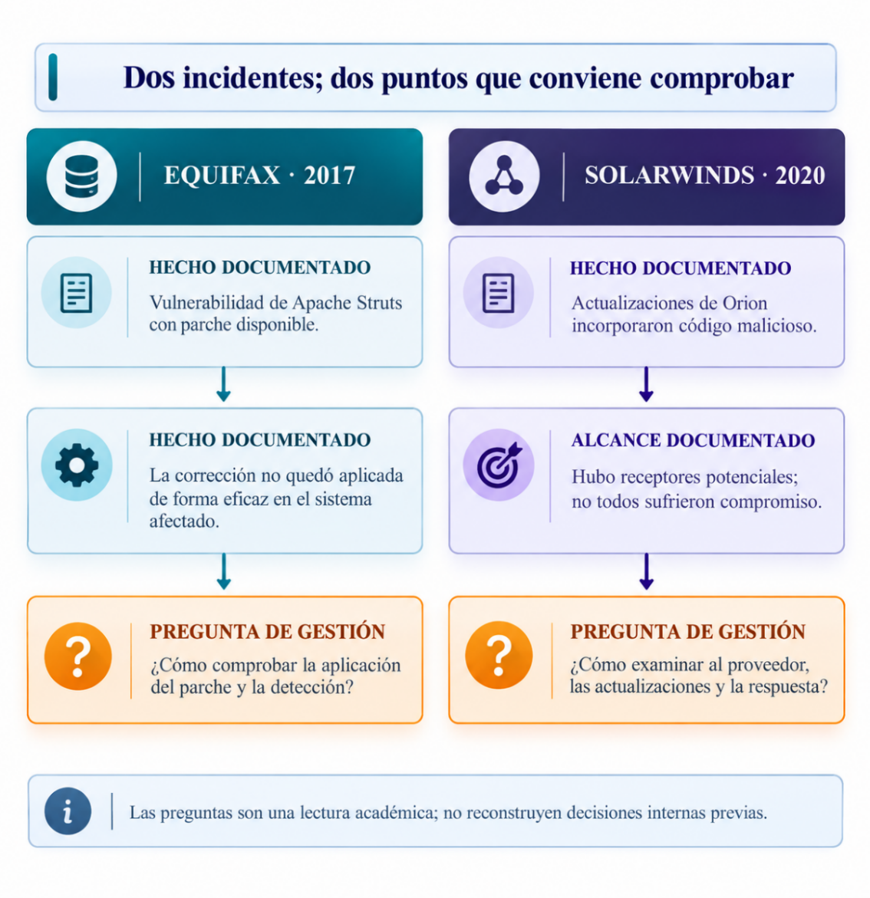
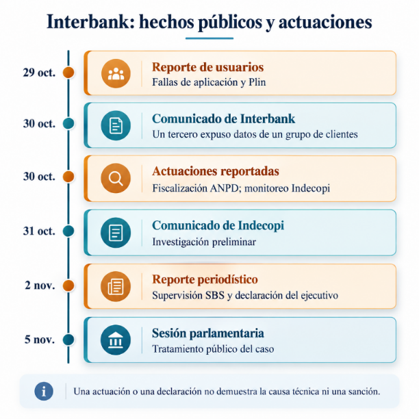
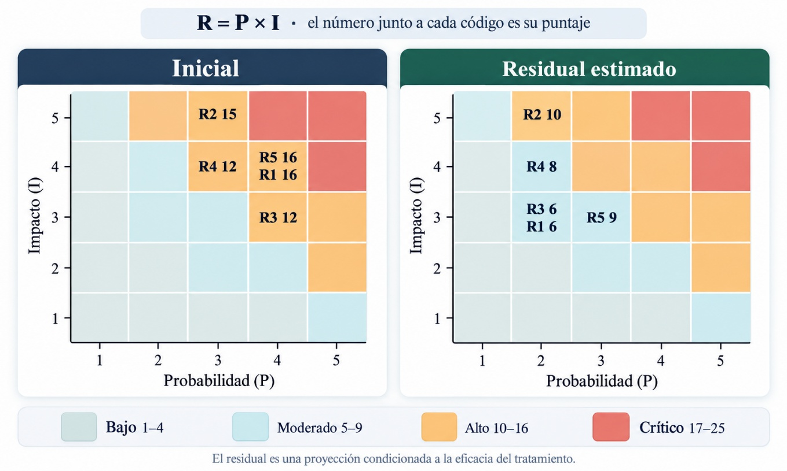

2017 · ESTADOS UNIDOS01 / 02
Equifax
Si existe un parche, ¿cómo se comprueba que la corrección llegó al sistema afectado?
Hecho documentado
Lectura de gestión
¿Qué debe ocurrir entre reconocer un problema de seguridad y elegir qué hacer? El recorrido sigue ISO/IEC 27005:2022 y aplica el procedimiento a cinco escenarios académicos del caso Interbank.
El análisis usa fuentes públicas. Las puntuaciones y medidas propuestas no describen la seguridad interna del banco.
Primero se aclaran los conceptos; después se comparan métodos y antecedentes. El recorrido termina en decisiones que solo podrían confirmarse con evidencia interna.
La información sostiene decisiones y servicios. La confidencialidad, la integridad y la disponibilidad ayudan a describir qué propiedad podría afectarse.
La valoración empieza con una secuencia verificable, no con un número aislado.
ISO/IEC 27005 orienta la gestión de riesgos de seguridad de la información. El cálculo P × I utilizado más adelante permite ordenar los escenarios; la norma no exige esa fórmula.
BS 7799-3:2006 es un antecedente británico. ISO/IEC 27005 tuvo cuatro ediciones internacionales: 2008, 2011, 2018 y 2022.
La guía se reorganiza en diez cláusulas y un anexo informativo; se alinea con ISO/IEC 27001:2022 e ISO 31000:2018 y desarrolla el contraste entre identificación por eventos y por activos.





El contexto define los criterios; la apreciación valora los escenarios y el tratamiento plantea medidas. La comunicación y el seguimiento permiten revisar las decisiones cuando aparece nueva evidencia.
La comunicación y la consulta acompañan todas las etapas; el seguimiento puede devolver el proceso a la apreciación.

ISO/IEC 27005 orienta el proceso. OCTAVE, MAGERIT, NIST SP 800-30, MEHARI, CRAMM, EBIOS Risk Manager y FAIR ofrecen distintas maneras de analizar los riesgos.
Las fuentes públicas permiten justificar categorías y ordenar prioridades, pero no proporcionan frecuencias ni pérdidas económicas suficientes para una cuantificación como FAIR.

Equifax y SolarWinds sirven como antecedentes para pensar en el seguimiento de controles y en la dependencia de proveedores. No se equiparan con el caso Interbank.
Si existe un parche, ¿cómo se comprueba que la corrección llegó al sistema afectado?
¿Qué cambia cuando una actualización de un proveedor confiable transporta código comprometido?

El comunicado del 30 de octubre de 2024 reconoció exposición de datos de algunos clientes. A partir de ese hecho público se construyen cinco escenarios para practicar el procedimiento, sin acceso a sistemas ni controles internos.
Las fechas distinguen reportes, comunicados y actuaciones; no establecen una causa técnica de la exposición.

P e I son categorías ordinales de 1 a 5 en un horizonte de doce meses. I toma el mayor valor entre personas y datos, operación, y consecuencias legales y reputacionales. R = P × I.
Las escalas y la fórmula se eligieron para este análisis; ISO/IEC 27005 no impone esos valores numéricos.
Seleccione un riesgo para seguir activo, condición facilitadora, consecuencia, valoración y tratamiento propuesto.
Las celdas muestran P × I. La matriz residual depende de que las medidas propuestas funcionen; no representa una medición real del banco.
Columnas: probabilidad (P) · Filas: impacto (I)

Los controles del Anexo A se proponen para modificar riesgos concretos. No se afirma que Interbank los haya implementado.
R1, R3, R4 y R5 son candidatos a aceptación condicionada a pruebas y aprobación competente. R2 sigue alto y el ejercicio indica continuar el tratamiento.
No hubo acceso a inventarios, registros técnicos, configuraciones, pruebas de controles ni decisiones corporativas. Una puntuación residual estimada no acredita reducción observada.
Estos temas pueden modificar futuros escenarios. Sin información suficiente, no se les asignan puntuaciones adicionales.
Una situación puede afectar datos, servicio y obligaciones a la vez. Cada dimensión necesita su propia evidencia.
Los riesgos de datos y modelos requieren supervisión; cada acceso se examina por sujeto, recurso y contexto.
Las relaciones con terceros amplían las dependencias que deben aparecer en el inventario y los escenarios.
Valorar pérdidas económicas exige datos. Las obligaciones aplicables deben revisarse según su vigencia.
Dos escenarios con la misma puntuación pueden requerir acciones diferentes. Lo útil es poder reconstruir el recorrido: criterio, evidencia, supuesto, decisión y revisión.
En Interbank, cuatro residuales se sitúan en moderado solo si funcionan los tratamientos propuestos. R2 sigue alto. Sin pruebas internas, ninguna cifra equivale a una aceptación real.
Las conclusiones responden a los objetivos planteados y separan los hechos documentados de las estimaciones.
Aquí se conservan los campos y respuestas utilizados. Las tablas pueden leerse y seleccionarse directamente.